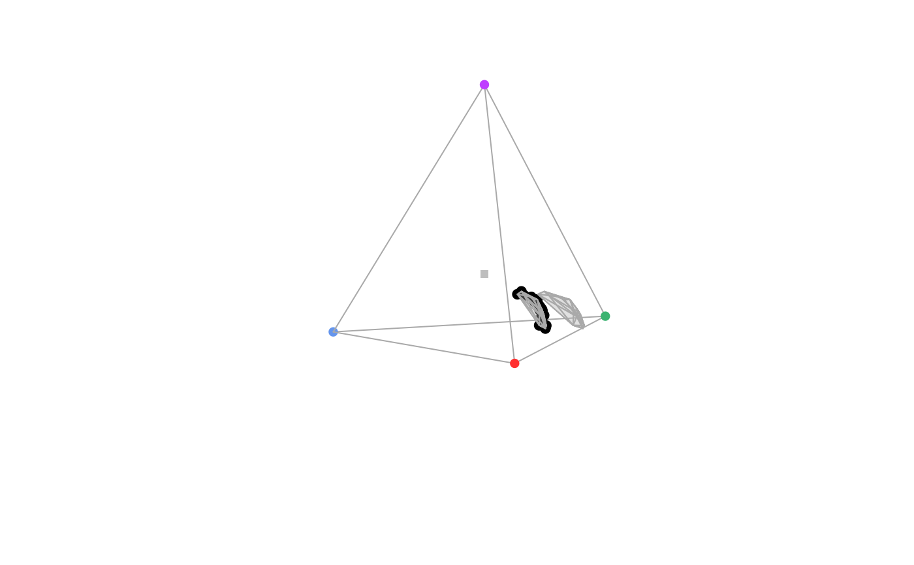

Produces a 3D colour volume in tetrahedral colour space when plotting a non-interactive tetrahedral plot.
vol( tcsdata, type = c("convex", "alpha"), avalue = "auto", alpha = 0.2, grid = TRUE, fill = TRUE, new = FALSE, ... )
| tcsdata | (required) a data frame, possibly a result from the
|
|---|---|
| type | if "convex", the colour volume is plotted using a convex hull and if "alpha", it is plotted using alphashapes. |
| avalue | if |
| alpha | transparency of volume (if |
| grid | logical. if |
| fill | logical. if |
| new | logical. Should a new plot be started or draw over an open plot?
(defaults to |
| ... | additional graphical options. See |
vol() creates a 3D colour volume within a static tetrahedral plot.
Gruson H. 2020. Estimation of colour volumes as concave hypervolumes using α‐shapes. Methods in Ecology and Evolution, early view doi: 10.1111/2041-210X.13398
Rafael Maia rm72@zips.uakron.edu
Hugo Gruson
# For plotting data(sicalis) vis.sicalis <- vismodel(sicalis, visual = "avg.uv") tcs.sicalis <- colspace(vis.sicalis, space = "tcs") plot(tcs.sicalis)# Convex hull vol(tcs.sicalis, type = "convex")# Alpha-shape vol(tcs.sicalis, type = "alpha", avalue = 1)